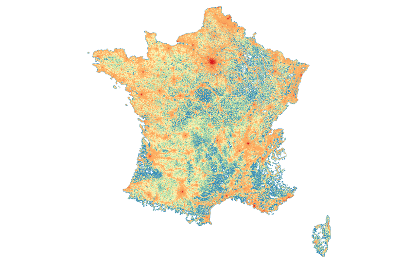
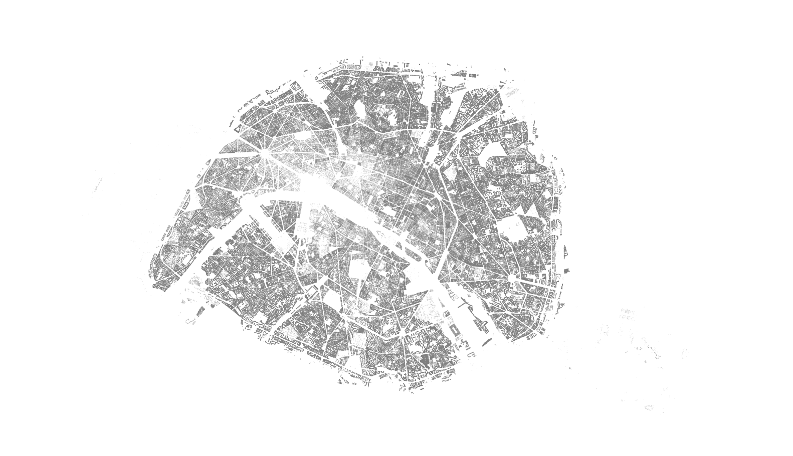
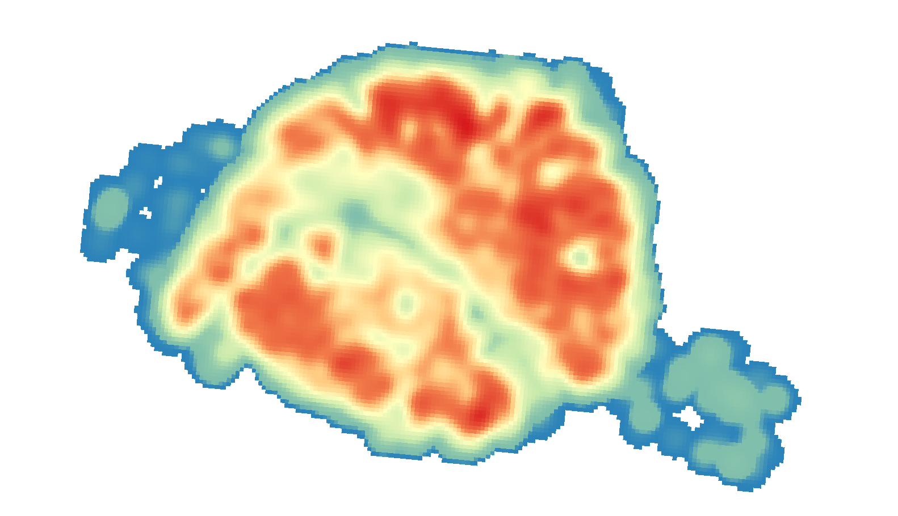
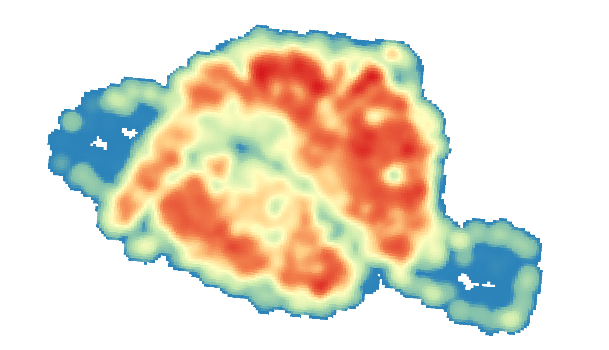

Requirement
- You need to install sbt from https://www.scala-sbt.org/download/
- You need to GDAL for the preprocessing steps from https://gdal.org/en/stable/download.html
Workflow to generate synthetic population with H24 library
Install
sbt publishLocal
Generate a synthetic population for your study area
Get Files for your study area
Run the getData.sh script.
source getData.sh
It will:
- download the CONTOURS-IRIS files from http://professionnel.ign.fr/contoursiris for instance: https://data.geopf.fr/telechargement/download/CONTOURS-IRIS/CONTOURS-IRIS_2-0__SHP_LAMB93_FXX_2014-01-01/CONTOURS-IRIS_2-0__SHP_LAMB93_FXX_2014-01-01.7z
- download R_rfl09_LAEA1000 file from https://www.insee.fr/fr/statistiques/fichier/1405815/ECP1KM_09_MET.zip
- download base-ic-evol-struct-pop file from https://www.insee.fr/fr/statistiques/fichier/2028582/infra-population-2012.zip
- download base-ic-diplomes-formation file from https://www.insee.fr/fr/statistiques/fichier/2028265/infra-formation-2012.zip
You should now have a "data" directory with all the relevant data in it. Note: We should have these files on IPFS very soon.
Select the relevant data for your study area
- geographically for CONTOURS-IRIS and R_rfl09_LAEA1000
- by selection using DEP, COM or other relevant codes for base-ic-evol-struct-pop and base-ic-diplomes-formation (keep headers and everything, just filter the data)
- export the latter files as CSV and create csv.lzma files
This whole process can be automatically done using the following command:
sbt "runMain eighties.h24.tools.ExtractRelevantData -c data/CONTOURS-IRIS_2-0__SHP_LAMB93_FXX_2014-01-01/CONTOURS-IRIS/1_DONNEES_LIVRAISON_2014/CONTOURS-IRIS_2-0_SHP_LAMB93_FE-2014/CONTOURS-IRIS_FE.shp -g data/GRID/R_rfl09_LAEA1000.shp -p data/base-ic-evol-struct-pop-2012.xls -f data/base-ic-diplomes-formation-2012.xls -d dep_list -o prepared_data"
Where dep_list is a list of "départements" you wish to extract from your data and prepared_data is the output directory.
For instance, the following command extracts the data for the 44 département (Loire Atlantique):
sbt "runMain eighties.h24.tools.ExtractRelevantData -c data/CONTOURS-IRIS_2-0__SHP_LAMB93_FXX_2014-01-01/CONTOURS-IRIS/1_DONNEES_LIVRAISON_2014/CONTOURS-IRIS_2-0_SHP_LAMB93_FE-2014/CONTOURS-IRIS_FE.shp -g data/GRID/R_rfl09_LAEA1000.shp -p data/base-ic-evol-struct-pop-2012.xls -f data/base-ic-diplomes-formation-2012.xls -d 44 -o prepared_data_44"
The following command extracts the data for the entire Île-de-France région:
sbt "runMain eighties.h24.tools.ExtractRelevantData -c data/CONTOURS-IRIS_2-0__SHP_LAMB93_FXX_2014-01-01/CONTOURS-IRIS/1_DONNEES_LIVRAISON_2014/CONTOURS-IRIS_2-0_SHP_LAMB93_FE-2014/CONTOURS-IRIS_FE.shp -g data/GRID/R_rfl09_LAEA1000.shp -p data/base-ic-evol-struct-pop-2012.xls -f data/base-ic-diplomes-formation-2012.xls -d 75,77,78,91,92,93,94,95 -o prepared_data_IDF"
The following command extracts the data for Metropolitan France:
sbt "runMain eighties.h24.tools.ExtractRelevantData -c data/CONTOURS-IRIS_2-0__SHP_LAMB93_FXX_2014-01-01/CONTOURS-IRIS/1_DONNEES_LIVRAISON_2014/CONTOURS-IRIS_2-0_SHP_LAMB93_FE-2014/CONTOURS-IRIS_FE.shp -g data/GRID/R_rfl09_LAEA1000.shp -p data/base-ic-evol-struct-pop-2012.xls -f data/base-ic-diplomes-formation-2012.xls -o prepared_data"
You get the idea, right?
You are ready to generate you synthetic population!
Let's keep our examples running. The parameters should look familiar.
For Loire-Atlantique:
sbt "runMain eighties.h24.tools.PopulationGenerator -c prepared_data_44/CONTOURS-IRIS_FE.shp -g prepared_data_44/R_rfl09_LAEA1000.shp -s 1000 -p prepared_data_44/base-ic-evol-struct-pop-2012.csv.lzma -f prepared_data_44/base-ic-diplomes-formation-2012.csv.lzma -o results_44/population.bin"
For Île-de-France (note we added a JVM option to give more memory to the process):
sbt -J-Xmx4G "runMain eighties.h24.tools.PopulationGenerator -c prepared_data_IDF/CONTOURS-IRIS_FE.shp -g prepared_data_IDF/R_rfl09_LAEA1000.shp -s 1000 -p prepared_data_IDF/base-ic-evol-struct-pop-2012.csv.lzma -f prepared_data_IDF/base-ic-diplomes-formation-2012.csv.lzma -o results_IDF/population.bin"
For Metropolitan France:
sbt -J-Xmx8G "runMain eighties.h24.tools.PopulationGenerator -c prepared_data/CONTOURS-IRIS_FE.shp -g prepared_data/R_rfl09_LAEA1000.shp -s 1000 -p prepared_data/base-ic-evol-struct-pop-2012.csv.lzma -f prepared_data/base-ic-diplomes-formation-2012.csv.lzma -o results/population.bin"
Export you synthetic population!
You can also export the population as a shapefile to see how it looks like.
For Île-de-France (note we added a JVM option to give more memory to the process):
sbt -J-Xmx4G "runMain eighties.h24.tools.PopulationShapefileExporter -p results_IDF/population.bin -o results_IDF/population.shp"
For Metropolitan France, a shapefile will not work, you can use the geopackage exporter:
sbt -J-Xmx8G "runMain eighties.h24.tools.PopulationGeopackageExporter -p results/population.bin -o results/population.gpkg"
And now, you have a Metropolitan France synthetic population! 
Generate and export a synthetic population in buildings
If you want to create a synthetic population in buildings, you can do so.
sbt -J-Xmx4G "runMain eighties.h24.tools.PopulationInBuildingsGenerator -o results/populationInBuildings.gpkg -c prepared_data/CONTOURS-IRIS_FE.shp -b prepared_data/buildings.shp -p prepared_data/base-ic-evol-struct-pop-2012.csv.lzma -f prepared_data/base-ic-diplomes-formation-2012.csv.lzma"
To illustrate the results, here is a map of a population generated for Paris.  The heatmap of the same population with a radius of 500 meters.  The heatmap of the same area using the population grid from INSEE (with a radius of 500 meters) . 
Generate a move matrix from data coming from origin-destination survey
For more data about origin-destination survey and methods for pre-processing, please see preprocessing_odsurvey/readme.md
For Île-de-France (note we added a JVM option to give more memory to the process):
unzip InputODData/H24_location_noID_ParisRegion.zip -d prepared_data_IDF/
lzma -f prepared_data_IDF/H24_location_noID_ParisRegion.csv
sbt -J-Xmx4G "runMain eighties.h24.tools.MoveMatrixGenerator -e prepared_data_IDF/H24_location_noID_ParisRegion.csv.lzma -s EPSG:27572 -p results_IDF/population.bin -m results_IDF/moves.bin"
For Loire-Atlantique (note we added a JVM option to give more memory to the process):
sbt -J-Xmx4G "runMain eighties.h24.tools.MoveMatrixGenerator -e prepared_data_44/H24_location_noID_NantesRegion.csv.lzma -s EPSG:2154 -p results_44/population.bin -m results_44/moves.bin"
Please also note that we need to specify the SRID used in the input survey.
Optionally, check your matrix
Generate the matrix destinations
sbt -J-Xmx4G "runMain eighties.h24.tools.EGTShapefileExporter -p results_IDF/population.bin -m results_IDF/moves.bin -d true -o results_IDF/destinations.shp"
Generate the matrix origins
sbt -J-Xmx4G "runMain eighties.h24.tools.EGTShapefileExporter -p results_IDF/population.bin -m results_IDF/moves.bin -d false -o results_IDF/origins.shp"
To see what the matrix looks like, you can generate a CSV file containing (parts of) the OD flows:
sbt -J-Xmx4G "runMain eighties.h24.tools.EGTShapefileExporter -p results_IDF/population.bin -m results_IDF/moves.bin -o flowmap/flows.csv"
You can now see it if you open the index.html in you browser. You can also filter the flows using a timeslice, sex, age, education & a percentile:
sbt -J-Xmx4G "runMain eighties.h24.tools.EGTCSVExporter -p results_IDF/population.bin -m results_IDF/moves.bin -t 0 -a 1 -s 1 -e 1 -o flowmap/flows_0_1_1_1_0.5.csv"
Run an "empty" Simulation
You can now run a simple 'empty' simulation with the test app.
For Île-de-France:
sbt -J-Xmx2G "runMain eighties.h24.tools.SimulationApp -p results_IDF/population.bin -m results_IDF/moves.bin -d 1 -o maps_IDF"
For Loire-Atlantique:
sbt -J-Xmx2G "runMain eighties.h24.tools.SimulationApp -p results_44/population.bin -m results_44/moves.bin -d 1 -o maps_44"